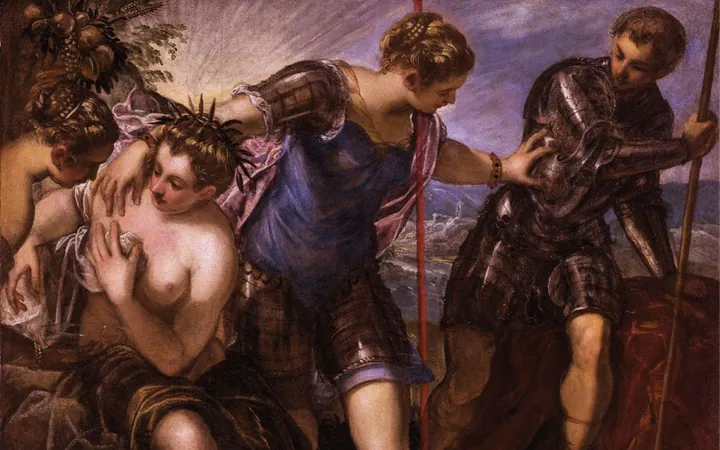

da gio 5 feb a gio 3 dic
VeneziE - ciclo di conferenze
Il progetto culturale VeneziE , reso possibile dall’associazione “Il Circolo Veneto” e aperto ai cittadini e agli abitanti della città metropolitana, è ispirato a un approccio critico e interdisciplinare, aperto al dibattito.
 Indicazioni
Indicazioni
- Costi e prenotazioni
- Costo non indicato · Prenotazione non indicata
- Programma
- Programma da verificare. Apri la fonte ufficiale per orari e possibili aggiornamenti.
- In caso di maltempo
- Nessuna indicazione specifica pubblicata.
- Note
- Acquisito automaticamente dalla fonte.
L’EVENTO
Descrizione completa
Il progetto culturale VeneziE , reso possibile dall’associazione “Il Circolo Veneto” e aperto ai cittadini e agli abitanti della città metropolitana, è ispirato a un approccio critico e interdisciplinare, aperto al dibattito.
Il progetto, che intende offrire una veduta a tutto tondo sull’intero territorio, spazia sulle storie, le arti, le architetture, le politiche, le culture, le mentalità, le devozioni, le tradizioni e i miti che hanno contribuito a plasmare l’identità di una città unica, molteplice e contraddittoria. Il suo obiettivo più ambizioso è quello di favorire un’esperienza educativa coinvolgente per i partecipanti e renderli consapevoli del patrimonio culturale, materiale ed immateriale, che li circonda per favorire la coesione sociale e la convivenza civile.
Giovedì, 5 febbraio Carlo Corsato, Tiziano tra chiesa e bottega. I destini incrociati dei figli Pomponio e Orazio
Giovedì, 5 marzo Federico Moro, Dalla civiltà di Ville e Castelli, la civiltà del Veneto (Linea Edizioni)
Giovedì, 9 aprile Fabio Rizzardi, Campanili a Venezia (Antiga edizioni)
Giovedì, 7 maggio Andrea Bellieni, Il Museo del Risorgimento di Venezia: passato, presente, futuro?
Giovedì, 1 ottobre Paolo Pistellato, Giorgione. Il pittore più sfuggente e misterioso del rinascimento veneziano
Giovedì, 5 novembre Massimo Rossi, La Kriegskarte del Ducato di Venezia (1798-1805). Una carta di guerra tra Rivoluzione napoleonica e Impero asburgico
Giovedì, 3 dicembre Antonio Manno, Sotto le ali del Leone. Le fortificazioni di Mestre
IL PROGRAMMA
Programma e orari
Appuntamenti raccolti dalle fonti elencate. Dove manca un orario, non è ancora disponibile in questa scheda.
Programma pubblicato
- 2026-02-05 — 2026-12-03 ·
INFORMAZIONI UTILI
Prima di partire
- Controllare la fonte prima di partire.
ORGANIZZAZIONE